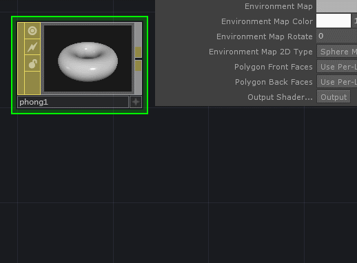

GLSL and Instances
Changing Instance Position with GLSL
While we can do a lot of instance manipulation with operators, it’s also possible to manipulate our instance positions directly through a custom GLSL Material. In this example we’ll take a look at how we might do that with just a few simple lines of code. While we can certainly start with the GLSL MAT, I find it’s usually easier to start by setting up a few pieces in our network, then outputting a shader from a phong MAT to use as a starting point.
Here we started by first setting up our instances as usual with a line SOP, and creating a 2D Texture array to use for unique textures. These help us see which instance we’re working with. When you have that working with a phong MAT, you can then output the shader:

Next we’ll change the vertical position of our instnaces with a little math in our vertex shader. The idea here is that we’ll use the x position of our instances to derive a value that we’ll then add to the y position of our instances. We can create a wave pattern by working with sine.
We’ll first need the x position of our instances, and we can find that through the Instance Matrix. If we want just the x position of this 4 x 4 matrix we can use the following:
float instXPos = TDInstanceMat()[3].x;
We can then use this value to derive a displacement value for y with:
float translateY = sin( instXPos );
Next we add this offset to our existing y position value:
vec3 newP = vec3(P.x, P.y + translateY, P.z);
The last step here would be to replace our variable in the TDDeform() function with our new variable:
vec4 worldSpacePos =TDDeform(newP);
This is the only change we need to make to our vertex shader in order to end up with a line of instances that is wave shaped.
Tested in TouchDesigner099 2020.23680
Updated 06.03.20
Matthew Ragan
Zoe Sandoval